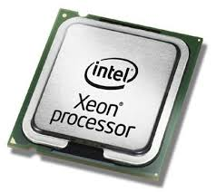
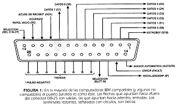

POP3 (Post Office Protocol 3)
Protocolo utilizado para la recepción de correos electrónicos, permitiendo descargar los mensajes al dispositivo local.
Procesador
Componente principal de una computadora que ejecuta instrucciones y realiza cálculos.
Programa
Conjunto de instrucciones escritas en un lenguaje de programación que permite realizar una tarea específica en una computadora
Protocolo
Conjunto de reglas que definen cómo se comunican los dispositivos en una red, como TCP/IP o HTTP.
Puerto paralelo
Tipo de conexión que transfiere datos en paralelo, usado en impresoras antiguas y otros periféricos.
Puerto serial
Conexión que envía datos un bit a la vez, utilizada en dispositivos antiguos como módems.